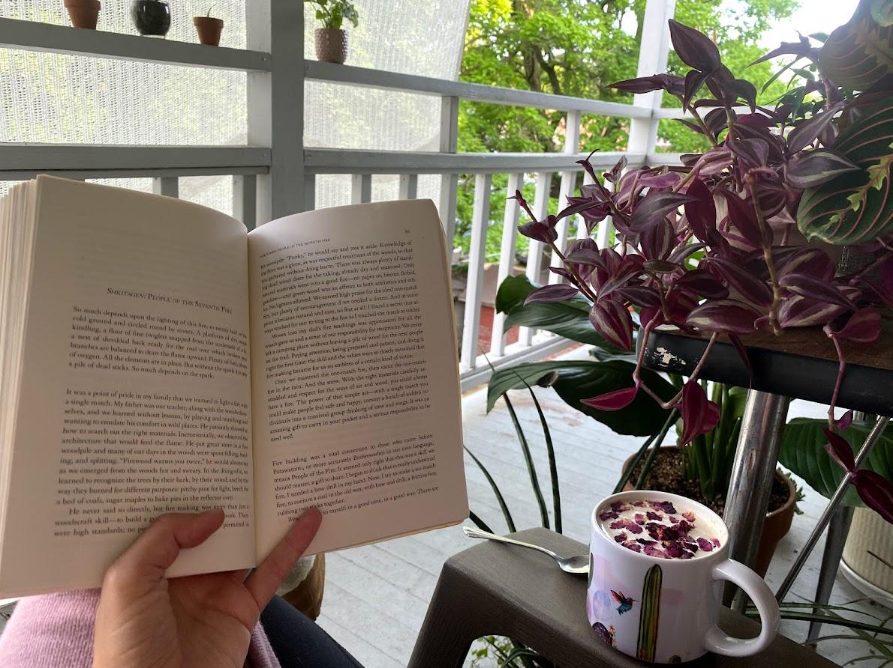

I am far more than just a scientist or a PhD student. My range of interests is quite wide,so feel free to peruse some of my curiosities, passions, and ideas unrelated to my work.I hope that some of it may speak to you.
Unrelated books...
Some books I love
Braiding Sweetgrass by Robin Wall Kimmerer
Worship and Wilderness by Lloyd Burton
The Death and Life of the Great Lakes by Dan Egan
The Overstory by Richard Powers
Sand County Almanac by Aldo Leopold
Gathering Moss by Robin Wall Kimmerer